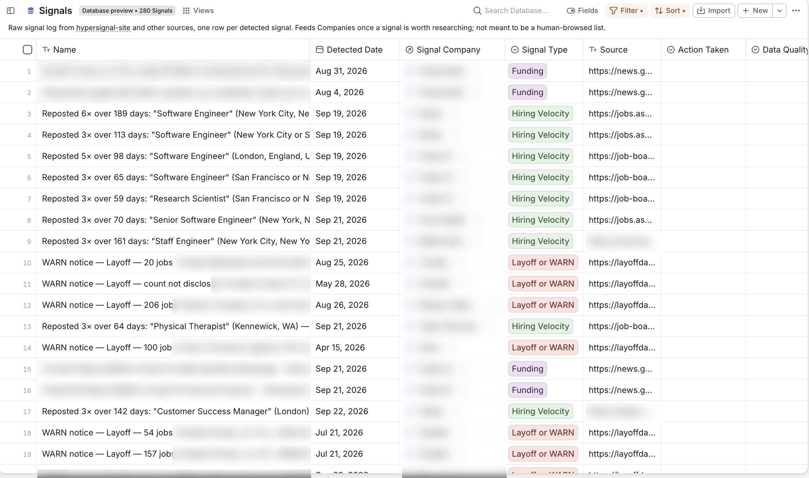
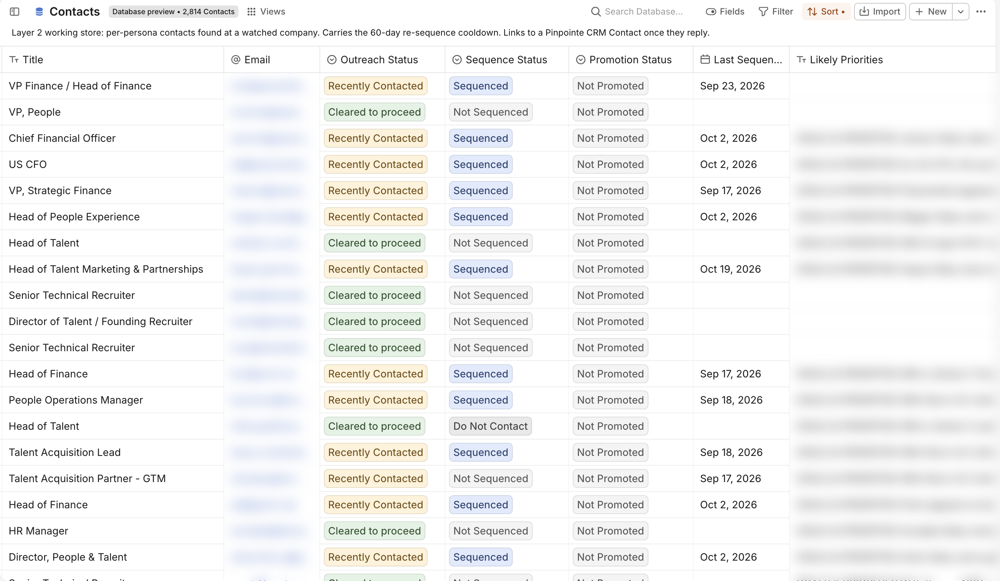

Problem
Pinpointe pivoted to B2B with no playbook and no sales team. Every prospect needed research, a reason to reach out, and a personalized email, and that didn't scale by hand.
Result: 4% reply rate and $450K of the $580K direct pipeline, built and run by one person.
![Diagram of the outbound GTM system, from signal to sequence, with Fibery read and written at every step. Step 1, sources: Paradigm and funding newsletters via Zapier, plus the daily hypersignal-gtm signal scan. Step 2, qualify: an ICP check across about 1,500 companies. Step 3, find contacts: a waterfall of QuickEnrich, String, and Hunter for People Ops, Finance, and Recruiting that stops at an email. Step 4, research and write: Claude researches stated goals and writes a three-email sequence per contact. Step 5, guardrails then enroll: a 60-day contact gate and an Apollo activity check, then enrollment in an Apollo sequence. Step 6, positive reply: the lead is reviewed in Fibery. Step 7, promote: an hourly sync moves the lead into CRM Accounts and Contacts. Step 8, CRM: only leads who replied. Underneath, the Fibery GTM Pipeline is the system of record for signals, companies, contacts, and sequence status.](../images/outbound.svg)
Pinpointe pivoted to B2B with no playbook and no sales team. Every prospect needed research, a reason to reach out, and a personalized email, and that didn't scale by hand.
An automated outbound system in Claude Code that runs the full motion:

Fibery is the source of truth and tracker for the whole pipeline. Positive replies move into Contacts and Accounts in the CRM space.
Contacts carry a 60-day re-sequence cooldown and a Do Not Contact status, so nobody gets emailed twice in a window or after opting out. The daily scan runs across about 1,500 companies.

Claude Code, Apollo, Paradigm for lead lists, Lavender for email quality.
Fibery as the source of truth and tracker. The agents run fully automated.
Code: signal-driven-outbound and hypersignal-gtm.
Built on the open-source HyperSignal-Hiring tool (Apache 2.0).
Hiring Cafe, one of the signal sources, kept blocking calls and runs dragged on for hours. I built a check that catches a stalled call and kills it, then uses the companies' ATS URLs to bypass the block when possible. I also added redundancy with other providers so one blocked source can't stall the pipeline.